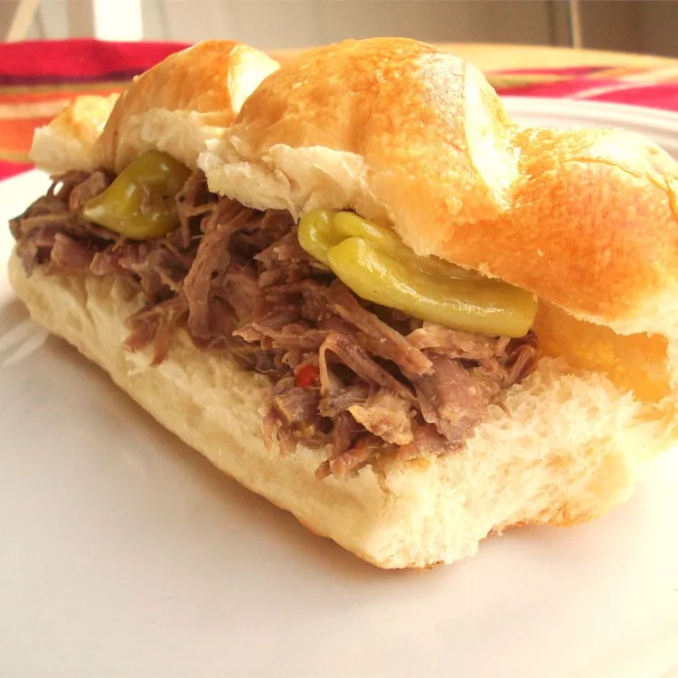

Italian Beef Sandwiches Recipe

Description
An Italian beef sandwich, originating in Chicago, is composed of
seasoned beef, simmered and served au jus on a long French roll.
The sandwich's history dates back at least to the 1930s.
Ingredients
- 3 pounds beef chuck roast
- 1 (3 ounce) package Louie's Italian Beef Au Jus Seasoning
- 1 can beer
- 2 cups beef broth
- 1 pack hoagie rolls
- 1 (16 ounce) jar pepperoncini peppers
- Place roast into a slow cooker and rub dressing mix over top.
Pour beef broth, beer, and pepperoncinis with juice around roast.
Cover and cook on High until meat is tender, 5 to 6 hours.
- Remove meat and shred with two forks. Return meat to slow cooker,
cover and cook for 1 more hour.
- Serve on hoagie rolls.